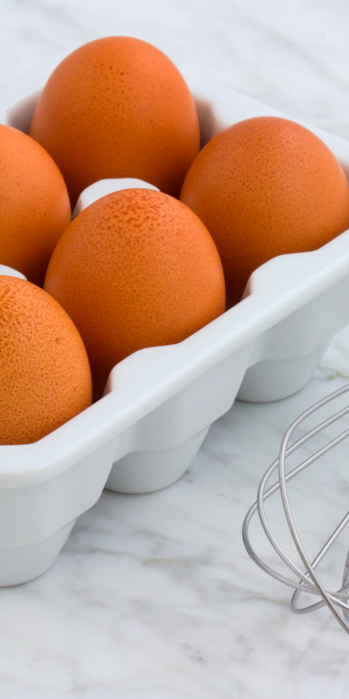

A morning staple but so easy to get wrong. The trick here is to cook low and slow whilst giving them plenty of attention.

Ingredients
2 Fresh Free-Range Eggs (per person)
10g Butter (per person)
Splash of Milk
Chopped Chives
To serve
Cracked Black Pepper
Maldon Sea Salt
Method
This recipe should take around 10 minutes to complete
Place a large frying pan on the hob at a medium heat and add your butter.
Crack the eggs into a bowl and whisk to combine.
Add chopped chives to the mix and whisk once more.
Once the butter has melted add the eggs and immediately grab a spatula to begin to stir.
Add a splash of milk to the eggs in the pan.
Continue stirring until the eggs start to bind. At this point turn this stirring motion into a folding one, this will keep the egg from breaking into too small pieces.
When your eggs are nearly cooked, take the pan off the heat and season with the cracked black pepper and maldon sea salt to taste.